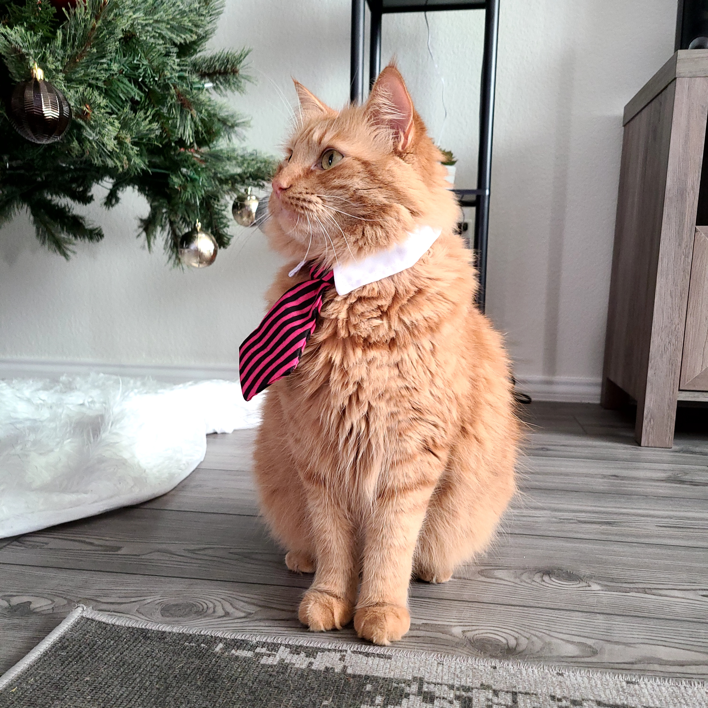

Hey! I am a full-stack JavaScript developer from Dallas, Texas.
My passion for Software Development started during my degree days in college and as soon as I graduated with my B.S in Healthcare Studies I decided to shift my focus into coding. I did some self taught JavaScript lessons from Udemy and later a full-stack bootcamp from Thinkful. Currently I am trying to further my software Development education by continuing to pursue a degree in Software Engineering
A Little Background
I graduated from college from The University of Texas at Dallas and worked various jobs for a while. Even though I enjoyed self-taught coding I understood that I needed something more structered to reach my goal of becomming a software developer one day. I enjoy collaborating and developing websites. If you are looking to hire developers, please don't hesitate to contact me.
Beyond Coding
Outside of coding I enjoy:
- Travelling
- Photography
- Gardening
I also have a pet cat Christopher. He is a Maine Coon kitty who loves to sit on top of my keyboard demanding attention!
How to Contact Me?
It will be a great pleasure to hear from you! Please feel free to contact me! Also do checkout my work in GitHub.